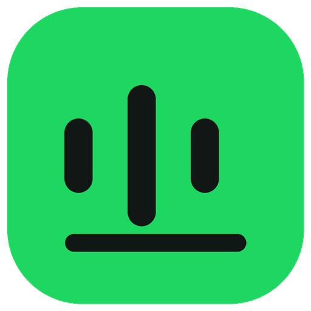

Synchronized lyrics
Follow the song in real time with lyrics fetched from LRCLIB — no API key required.

Spotify Lyrics OverlayA beautiful, always-on-top desktop companion for synchronized lyrics, album art, and the track already playing.
Free for personal use · Windows 10/11 · No account required
BUILT FOR THE MOMENT BETWEEN THE SONG AND EVERYTHING ELSE
Keep your music close without opening another full-size player. Choose the mood, the layout, and how much of the song you want to see.
Follow the song in real time with lyrics fetched from LRCLIB — no API key required.
Artwork brings its own accent color, blur, and energy to the overlay.
Switch between focused lyrics, album cover, and a combined canvas.
Frameless, draggable, resizable, and always on top.
Reads Windows SMTC or Linux MPRIS and keeps playback in sync as your music changes.
Your track state and preferences stay on your device. The app has no account system, telemetry, analytics, or tracking. Network requests are limited to lyrics, album-art lookup, and signed update checks.
No accounts, analytics, ads, or listening history collection.
A fast, lightweight native backend powers media integration and the desktop window.
Review the source and understand exactly what the app does before you install it.
Install in seconds, then tune the colors, type, blur, opacity, and layout from Settings.